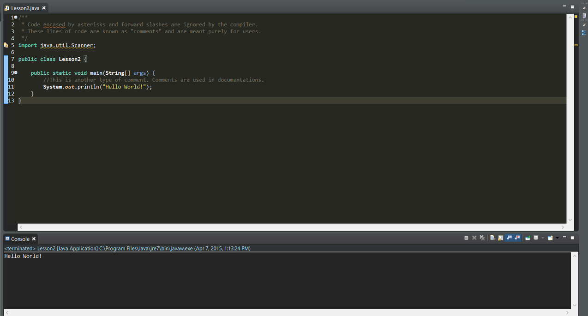

Lesson 2: First Java Program
In this section, we will explore a simple and iconic Java program that prints a string "Hello World!" to the console. I will explain the purpose and general structure to the each line of code.
Hello World!
Source Code: 
/**
* Code encased by asterisks and forward slashes are ignored by the compiler.
* These lines of codes are known as "comments" and are purely meant for users.
*/
import java.util.Scanner;